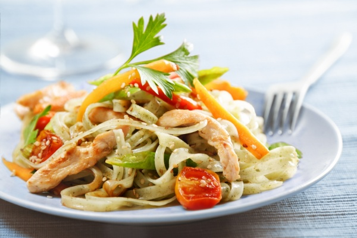

Заказ блюд с доставкой

Заказ и доставка еды на дом и в офис
Вы когда-нибудь пользовались услугами доставка вкусной еды? Как вы делали заказ?
По телефону или через сайт? Каким бы ни был ваш ответ, вы уже находитесь в правильном
месте и в правильное время – на главной странице сервиса – лучшая доставка еды на дом
в Днепре. Здесь вы сможете познакомиться с меню больше сотни ресторанов
вашего города и оформить заказ еды с доставкой.
Самый большой выбор ресторанов
Служба доставки еды – площадка, места на которой хватит
для тысячи и больше ресторанов, кафе и кондитерских.
Это место, где можно разместить онлайн меню с ценами и описаниями блюд,
предложить посетителям скидку или блюдо в подарок и, конечно же, порадовать
своих постоянных и новых клиентов услугой - заказ еды онлайн. Сегодня компания
поддерживает партнерские отношения с сотней заведений. Это пиццерии, рестораны
быстрого питания, сендвич бары, бургерные, ивент-кафе, гастро пабы, ирландские
пабы, суши-бары, изысканные рестораны и кондитерские дома. Общее количество позиций
в меню перевалило за двенадцать тысяч. Это место, где есть еда на дом круглосуточно.
Что и когда чаще всего заказывают с доставкой?
-
Бургеры, пицца и шашлык – самый популярный заказ блюд на дом.
Согласитесь, такую еду можно кушать в любых условиях и при любых обстоятельствах.
Главное – вкус, удобная упаковка и демократичные цены. Клиенты часто заказывают еду
домой или в офис, в парк или в университет. Передача заказа занимает считанные минуты,
ресторан берется за готовку, готовое горячее блюдо вывозят с кухни и доставляют клиенту
максимально быстро. Оплатить заказ еды на дом можно картой. Работает большая и дружная
команда профессионалов. Особенно ценится дешевая доставка еды. Впрочем, из ряда ресторанов
доставка осуществляется бесплатно.
-
Чаще всего доставка еды на дом осуществляется ближе к вечеру. Семейные ужины,
вечеринки с друзьями, романтические встречи… Поводы всегда очень разные. Бизнес-ланчи
в самых разных стилях, от традиционных украинских до экзотических в китайских коробочках,
развозят ежедневно с 12:00 до 16:00. Вот вам еда с доставкой в офис. Пользуйтесь!
-
Работает доставка еды круглосуточно. Согреваются горячими первыми блюдами и осетинскими
пирогами, чуть стоит погоде напомнить о прохладном ветре и осеннем дожде. Выбор согревающих блюд огромен.
-
Доставка еды ночью чаще всего выпадает на пятницу и выходные. Люди гуляют, а значит, вкусно кушают.